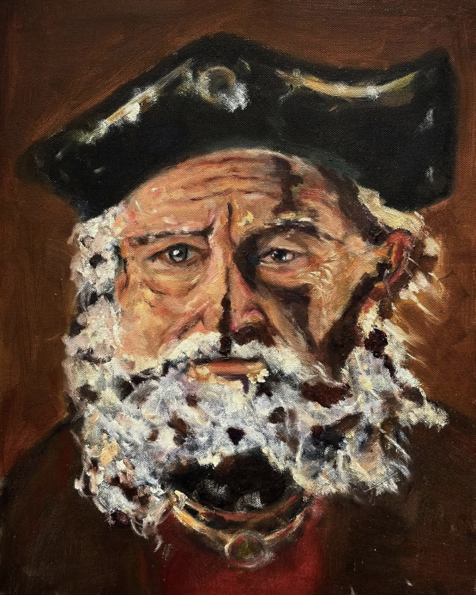
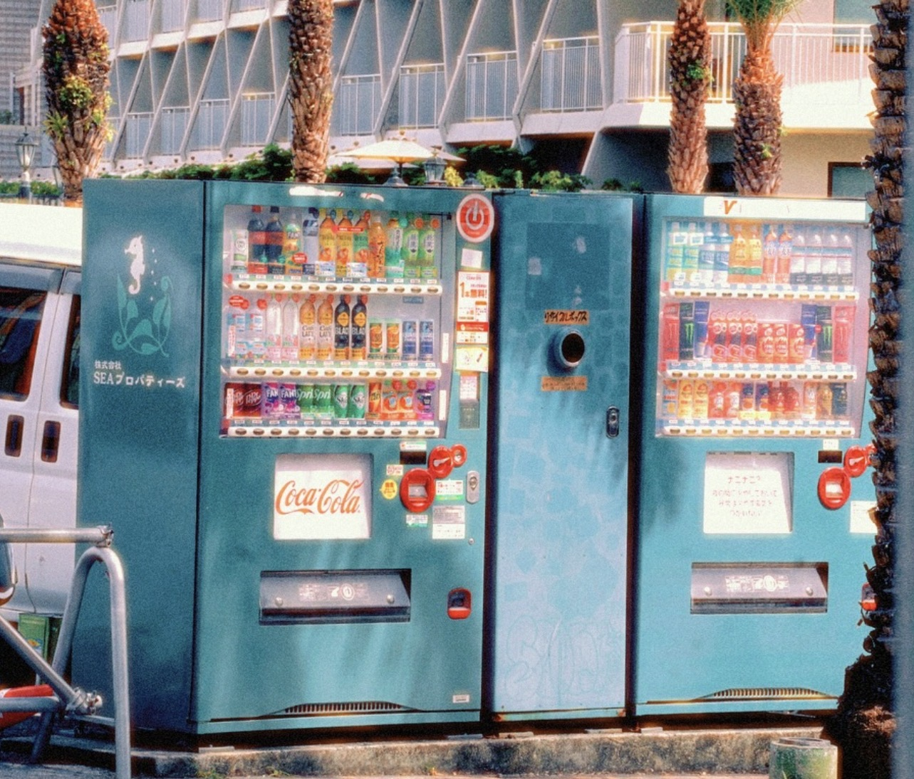
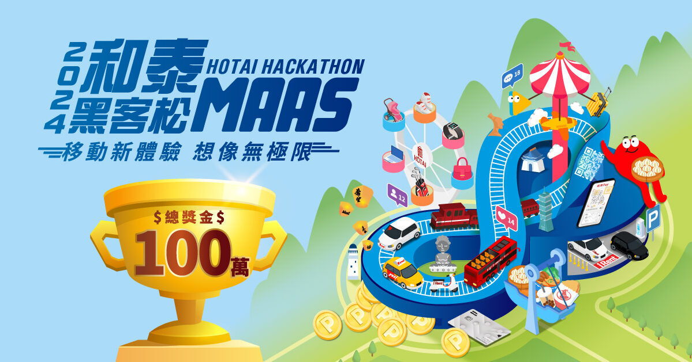

Hi, I'm Christine!
I'm a Psychology and AI double major who loves building innovative, human-centered AI products. This site is a collection of projects I've built while figuring out AI, and also a place to get to know a few different sides of me.

 ChatGPT
Codex
Claude
ChatGPT
Codex
Claude
 Perplexity
Midjourney
Perplexity
Midjourney
Uses
Check out my favorite tools
I build at the intersection of people, technology, and everyday life.
I start by noticing patterns and pain points in how people actually behave, not how they say they behave.
Painting & photography, when I'm not shipping code.


Work Experience
Institute of Information Science, Academia Sinica
July 2026 – Present
Research Assistant
Brain-wave capture via BCI + VR rehabilitation environment simulation.
Microsoft, Taipei, Taiwan
Jan 2026 – June 2026
AI Engineer Intern
Designed telemetry pipelines for real-time monitoring across an enterprise AI web system.
Watsons TW, Taipei, Taiwan
Feb 2026 – July 2026
AI & Data Science Intern
Built a competitor-analysis crawler and data pipeline for retail intelligence.
NCCU Hope Lab, Taipei, Taiwan
Oct 2024 – Apr 2025
Research Assistant
Built an automated mental health assessment system that saves about 20 hours of manual work a month.
Competitions

Hotai Hackathon
Top 20
2024
AI Innovation Award
2026